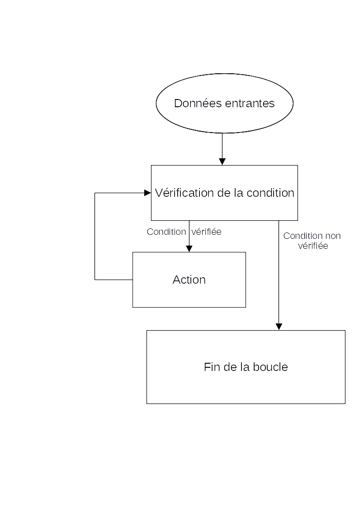

Une structure répétitive est une partie du programme qui a besoin d'une condition pour fonctionner. Elle permet d'éxécuter une action de façon répété tant que la condition est vérifié. Une fois que la condition n'est plus vérifié, la boucle s'arrète et le programme continue.
Exemple: la fonction while est une structure répétitive.

Retour en haut de la page